Sketchプラグインを適当に選んで紹介していく、Sketch Plugin Advent Calendar 2016 22日目は、アイコンフォントをキーワード検索して挿入できる「Icon Fontプラグイン」です。
アイコンが並んだパネルを表示し、目視またはキーワードで検索しキャンバスへ挿入できます。
事前準備
プラグインを使うには、プラグイン以外のデータをインストールする必要があります。
まずはプラグインをインストールし、「Plugins → Icon Font → What is a Font Bundle?」を選択しウィンドウを表示します。
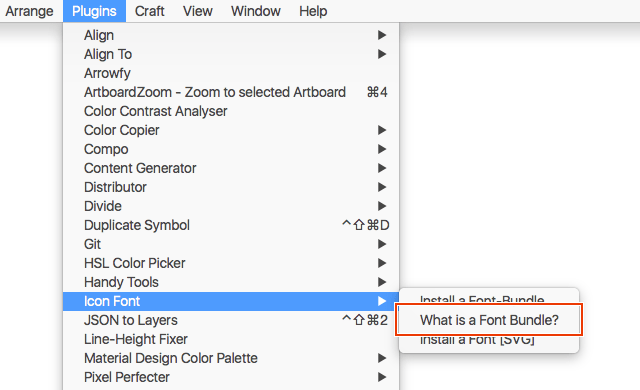
ウィンドウ中のボタンをクリックしGitHubへアクセスします。
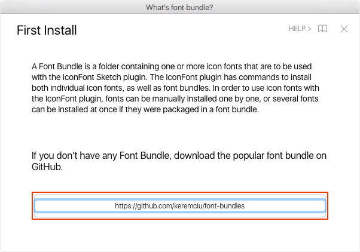
右上の「Clone or Download」ボタンからポップアップを表示し、「ZIP Download」をクリックすると「font-bundle-master」というZIPファイルのダウンロードが始まります。
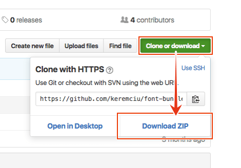
ダウンロードできたら、「ttf-files」内の4つのフォントをインストールします。フォントファイルを選択し、ダブルクリックして表示されるウィンドウ内の「フォントをインストール」ボタンからインストールできます。ただし、すでに最新版のフォントがインストールされている場合は不要ですので、フォントを検索して入っているかどうか確認しましょう。
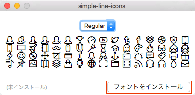
Sketchに戻り、「Plugins → Icon Font → Install a Font Bundle」を実行します。
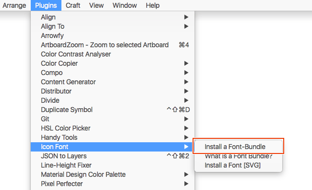
実行するとフォルダを選択するウィンドウが表示されますので、先ほど解凍したフォルダの直下まで移動し「開く」をクリックします。
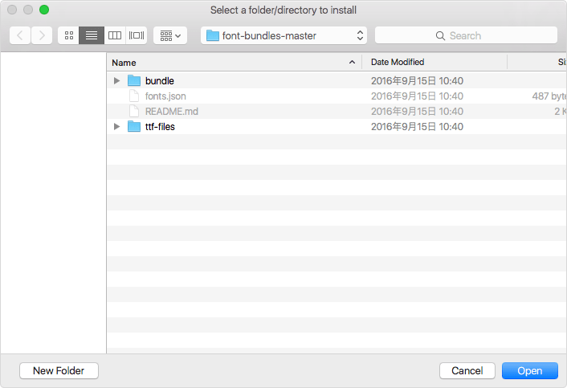
ウィンドウ下にメッセージが表示されれば準備完了です。
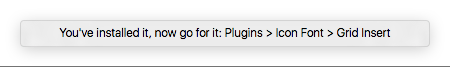
プラグインを利用する
Font Bundleをインストールするとメニュー項目が変わります。
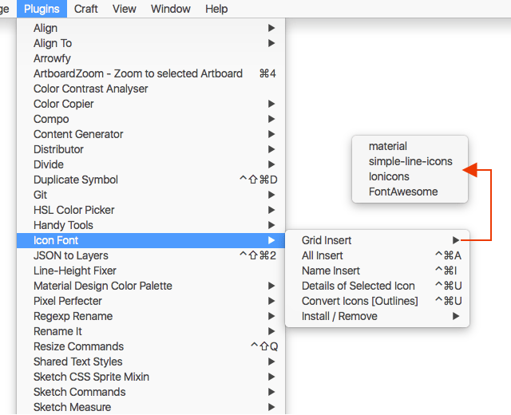
Grid Insert
サブメニューで選択したアイコンフォントを一覧で表示します。
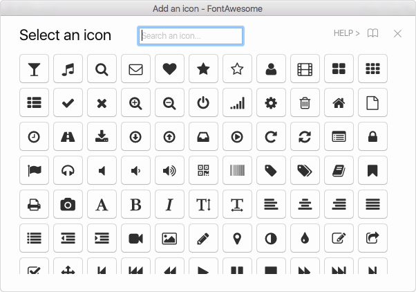
一覧ウィンドウからアイコンをクリックすれば挿入、テキストレイヤーを選択している場合は挿入になります。上の検索ボックスでキーワードによる絞り込みもできます。インクリメントサーチになっていないので、キーワードを入力したらEnterキーを押しましょう。
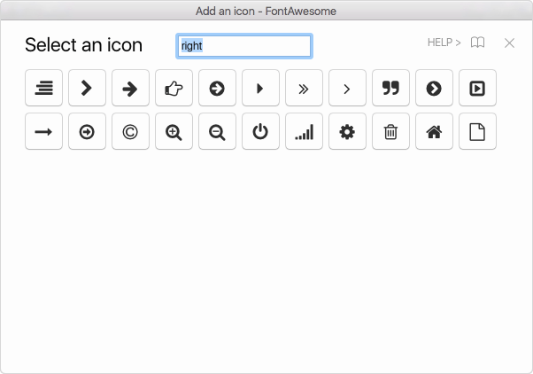
All Insert
インストールしているアイコンフォントすべてを表示する以外は、Grid Insertと同様です。ショートカットはCommand ＋ Control ＋ Aです。
Name Insert
文字に応じた名前を入力し、アイコンフォントを挿入します。ただし、名前が完全に一致する必要があります。ショートカットはCommand ＋ Control ＋ Iです。
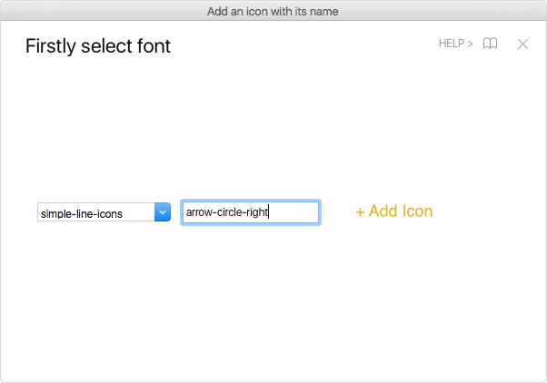
Details of Selected Icon
選択しているアイコンフォントの文字名・HTMLコード、文字コードの情報およびコピーボタンが表示されます。ショートカットはCommand ＋ Control ＋ Uです。
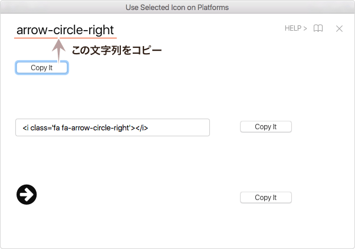
Covert Icons [Outlines]
このプラグインで挿入したアイコンフォントをすべてアウトライン化します。単純にアウトライン化するのではなく、ベースのパスが挿入されます。
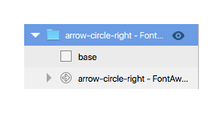
そのほかの機能（Install / Remove）
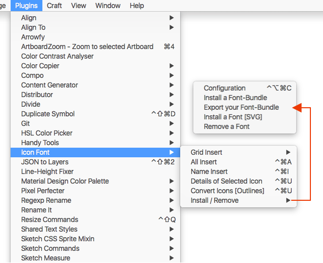
Configuration
Icon Fontの設定を行います。ショートカットはCommand ＋ Control ＋ Option ＋ Cです。
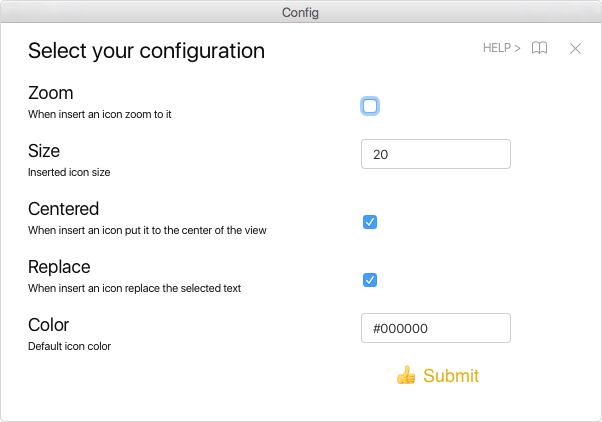
Zoomにチェックを入れると、挿入時にそこへズームします。
Sizeは挿入時のサイズを設定します。
Centeredにチェックを入れると、現在表示しているキャンバスのセンターへ挿入します。チェックを外した場合は、デフォルトの座標（大概はX:0 / Y:0）へ挿入します。
Replaceにチェックを入れると、テキストレイヤーを選択している場合には、その内容をアイコンフォントで書き換えます。
Colorは挿入時のフォントカラーです。
Install a Font-Bundle
フォント情報をインストールし、プラグインで使えるようにします。フォントデータそのものと、フォント情報を記載したJSONファイルが必要です。
JSONファイルは、Font Bundleでダウンロードしたフォルダに入っている、fonts.jsonおよびbundleフォルダ内のJSONファイルにあたります。fonts.jsonでそれぞれのフォント情報が記述されているJSONファイルを指定し、それぞれのJSONファイルで、キャラクターコードに対応した情報を記述します。
Export your Font-Bundle
現在インストールしているフォント情報をJSONファイルとして書き出します。実行し書き出すフォルダを指定すると、fonts.jsonとbundleフォルダへフォント情報のJSONファイルが書き出されます。
Install a Font [SVG]
SVGフォントを使えるようにインストールします。
Remove a Font
フォント情報を削除します。フォントデータ自体は削除されません。
それでは、楽しいSketchライフを。